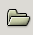

9.3.1Using the File Open dialog.
Opening a file into a workbook is a relatively simple process. The only complications come from using the File Open dialog to find the desired file, from changing the automatic file format type recognition system, or from specifying a different character encoding than that chosen by Gnumeric. The first of these steps will become intuitive once the user understands the functioning of the dialog. The latter two steps are generally unnecessary and can be ignored by most users.
The next section explains in detail the different components of the File Open dialog and the subsequent section describes each step in the process of opening a file.
9.3.1.1 The components of the File Open dialog
The File Open dialog allows the user to open an existing file into a Gnumeric workbook but requires that the user find the folder containing the file, select the file, and optionally define a file format type and a character encoding. The dialog also allows the user to change the list of bookmark folders to quickly access different parts of the file system.
The File Open dialog first appears as is shown in Figure 9-1 which also shows a label for each different component of the dialog.
The different components of the File Open dialog, shaded with boxes of different colors and labeled with a letter.
The purpose of each labeled component in Figure 9-1 is explained below:
- A - The starting folder selection area.
-
This area allows the user to begin navigating the filesystem by choosing a starting folder. The navigation system in this dialog only allows users to select sub-folders of this starting folder so the starting folder must contain the desired file, possibly nested in one or more sub-folders.
The folders listed in this area include the standard folders provided by the system and a number of folders added, as bookmark folders, by the user. The standard folders provided by the system will vary for different machines and system administrators may have disabled access to certain branches of the filesystem. By default, the standard folders provided include the user's 'Home' folder, the user's 'Desktop' folder, a folder pointing to the root of the filesystem tree and folders for each of the removable storage devices attached to the computer. The user's home folder, on GNU and other UNIX like systems, this folder is usually known as ~ or ~user_account_name where the phrase user_account_name represents the account name used by the current user. This folder is often located at /home/user_account_name/ in the filesystem. The 'Desktop' folder is the folder which holds the files which are displayed in the background of the user's window. The 'Filesystem' folder is the top of the filesystem tree, which on GNU systems is also known as /. The list also presents peripheral or external devices. Below the standard folders, area A has a separator and the bookmark folders selected by the user. In Figure 9-1 the folder currentWork is a folder named by the user and added to the list of bookmark folders.
 Understanding the file organization system.
Understanding the file organization system.In order to understand how to change folders, it is first necessary to understand the system by which documents are stored. This system is called the 'filesystem'.
All documents are stored in a folder. Folders can contain files but can also contain other folders. Any folder therefore can contain several sub-folders, each of which may itself contain several sub-folders; the resulting structure is called a nested 'tree' with the original folder being the 'relative root' of that tree.
In GNU and UNIX systems, all of the files are stored in folders organized in a single, unified filesystem tree with a folder named '/' at the absolute root of the tree. Every file is accessible from this absolute root folder and, by default, this folder is provided as the choice named Filesystem with an icon of a disk drive in area A in the File Open dialog.
Navigating the directory tree from the single root folder would quickly become burdensome and the File Open dialog provides several other starting folders in area A. Two starting folders which are commonly provided are the 'Home' and 'Desktop' folders for the current user.
In a complex computer system, the absolute root folder may be hidden from the user and the starting folders accessible to the user may only provide limited access to the filesystem. Jointly, the starting folders provided should allow the users to access all the folders in which the user has permission to store files and to the folders which are designed to be read by the user.
Several starting folders may be provided when files can be opened from different filesystems. This will be the case when filesystem on other machines are accessible over a network or when Gnumeric is running on operating systems whose filesystems are not unified, such as the proprietary operating systems sold by Microsoft in which each disk drive has its own root named, for example, C:\ or D:\.
Additional starting folders can be added as 'bookmark folders' by the users themselves. These bookmark folders do not provide access to a different set of folders but merely provide efficient access to a folder and its sub-folders. These bookmark folders are easy to change to allow a user to work efficiently. These bookmark folders are listed, in area A, under the thin horizontal separator line. The creation and deletion of these bookmark folders is explained below, in Section 9.3.1.3.
- B - The folder hierarchy area.
-
This area displays the folder hierarchy starting from the starting folder selected in area A and ending in the current folder, the folder whose contents are displayed in area C, while displaying all the folders between the two. This area changes dynamically as the user changes to new folders. In the case shown in Figure 9-1, the user has selected their 'Home' folder as the starting folder in area A and has not navigated to any sub-folders.
- C - The folder content area.
-
This area displays the contents of the currently selected folder which is the rightmost folder shown in area B.
 This list of folders and files is filtered.
This list of folders and files is filtered.Not all of the sub-folders and files present in the folder area are shown.
Firstly, hidden folders and files, those that start with a leading period, are not displayed by default. These can be shown by placing the mouse pointer over area C, clicking with one of the secondary mouse buttons to raise the context menu, moving the pointer onto the menu entry, and clicking with the primary mouse button. This step will ensure that all the folders are displayed.
Secondly, the filtering rule defined in area F will limit the files displayed based on the characteristics of these files. By default, a filtering rule is applied which causes only those files present that have an extension commonly used for spreadsheet files. The rule can be changed to display all the files regardless of their extension, except possibly for the hidden files.
- D - The panel rearrangement handles.
-
These triple dots indicate that the mouse can be used to change the shape and size of the different areas in the dialog. These handles can be used by placing the mouse pointer above a handle, clicking and holding with the primary mouse button, then dragging the handle to a new position, and then releasing the mouse button.
- E - The bookmark folder list modification buttons.
-
These buttons will add or remove folders to or from the list of bookmark folders in area A. The button will add the folder currently selected in area C. The button will remove any bookmark folder that is selected in area A.
- F - The filter definition area.
-
This area contains a drop down menu with the different filters defined by the application. Filters are rules that limit the types of files which are displayed in the folder content area, area C.
By default, the File Open dialog starts with a filter named "Spreadsheets" which causes the folder content list to only show files which are recognized as files that Gnumeric could open.
The filter in area F can be changed by clicking on the area to open the drop down list and then selecting the filter named "All files". This filter applies no rules, essentially disabling any filtering operation, and lists all the files in the currently selected folder. Note, however, as explained in the warning given in the section explaining area C above, that any files starting with a leading period are not shown. To display such 'hidden' files, the user must use the context menu available in area C.
- G - The file format type selection area.
-
This area provides a drop down list of all the file formats provided by the Gnumeric program itself and by all the currently active plugins.
By default, Gnumeric is configured to automatically recognize the type of each file selected by the user. This recognition system is sophisticated and generally works. The best strategy is to try opening the file using this automatic recognition strategy and, only if the automatic recognition system fails, close the worksheet with the mangled file and re-try to open the file a second time but manually selecting the file type in the second attempt.
The file formats which can be selected are those listed in Section 9.3.2 below. Each of these formats are explained in detail in Section 9.2.
If the file format type named "Text import (configurable)" is opened, this will start the text import procedure. Section 9.4 explains this procedure in complete detail.
- H - The character encoding selection area.
-
This area provides a drop down menu which allows the user to specify the encoding which Gnumeric must use to interpret the characters in text files. This menu is only enabled for the two text file formats: "Comma or Tab Separated Values (CSV/TSV)" and "Text Import (configurable)". This menu is disabled for all other file types because Gnumeric automatically detects the encoding for those files.
A character encoding is a system to relate the binary digits contained in a computer file to the characters of a textual script. All computer files consist only of binary digits so some system is required to determine this relationship. Where early computers used simple encoding systems which only supported the characters commonly used in English, most systems are now standardizing on the UTF-8 encoding scheme which relates the binary digits in computer files to characters defined in the Universal Character Set, a set which is still being defined but will include all the characters in every language and many other useful symbols for mathematics, science, music and literature. Section 9.4.1.1 contains a brief explanation of character encoding, and discusses the encodings available in Gnumeric.
The character encoding can be set using the drop down menu in area H. By default, the encoding is set for the locale of the user. The locale is set by the operating system and defines the language, time zone and other geographic related preferences of the user. The character encoding is changed by clicking on the drop down menu button in area H, that is by placing the mouse pointer over this menu and clicking on the primary mouse button, and then navigating the menu to select the new encoding, that is by moving the mouse through the menus and clicking on the name of the new encoding. Gnumeric will then use this encoding to open the text file.
- I - The button area.
-
The button area provides two buttons, the and the buttons. Clicking the button will dismiss the dialog and return the user to the worksheet. Clicking the button will cause the selected file to be opened into a worksheet, using either the automatic file format type detection or the file format type specified if one has been selected, and using the character encoding scheme if one has been selected.
The procedure required to open a file into a workbook using this dialog is presented next.
9.3.1.2 The procedure to open an existing file.
Opening an existing file into a workbook requires selecting the folder containing the desired file, selecting the file within this folder, and optionally selecting the file format type and character encoding.
-
Launch the File Open dialog.
The File Open dialog can be launched using three alternative approaches.
All three methods will result in the equivalent action, launching the File Open dialog to allow the user to find the file that they wish to open.- Using the Menus
-
Select, in the menu, the menu item.
- Using the Standard Toolbar
-
Click on the button: 
- Using a Keyboard Shortcut
-
Type the combination Ctrl+o, typing both keys simultaneously.
-
Navigate the file system to open the folder with the file.
Changing folders involves selecting a starting folder in area A which contains the folder with the desired file, and then double-clicking on the folders listed in area C until the folder containing the file has been reached. The folder hierarchy listed in area Bcan also be used to navigate up the hierarchy if a folder was opened by mistake. As explained below, a user can move around the hierarchy with as many folder selections as they need to reach the folder containing the file the user desires to open.
To select a new folder, one of the starting folders which contains the desired folder must first be selected and then the hierarchy must be navigated to find the desired folder, and this folder must be opened to expose its contents. As explained below, a user can move around the hierarchy using as many changes as they need to choose the folder in which to save their Gnumeric file.
-
Select a starting folder in area A.
The first step in choosing a new folder requires selecting, in area A, a starting folder which contains the desired folder. The new starting folder is chosen by placing the mouse pointer over the folder name and double clicking (click twice rapidly without moving the mouse) with the primary mouse button. This will change the leftmost button in area B and change the folders and files listed in area C to list the contents of the starting folder which was just selected.
-
Navigate the filesystem to reach the desired folder using area C.
The next step involves descending the folder tree to reach the desired folder. This requires double clicking the sub-folder of the staring folder which contains the desired folder and continuing through the whole hierarchy until the desired folder is reached. After each double click, the selected folder is added as the right most button in area B and the contents of the selected folder are shown in area C. Once the desired folder is reached, it must be opened in the same way, so that its contents are listed in area C and the file can then be saved into this folder by clicking on the button.
-
Navigating back up the folder tree using area B.
If the sub-folder selected in area C does not contain the branch of the folder tree leading to the desired folder, the buttons in area B can be used to jump further up the folder tree but only as far as the starting folder selected in area A. Area B provides a list of buttons with the names of all the folders between the starting folder listed in area A and the currently selected folder. By clicking on one of these buttons, that is by placing the mouse pointer over the button and clicking with the primary mouse button, the folder listed on the button will be opened in area C so that the selection process can restart from this branch.
-
-
Select the file.
The file must be selected by placing the mouse pointer over the filename in area C and clicking with the primary mouse button.

The file can be opened and the dialog dismissed by selecting the file with a double click of the primary mouse button. The last two steps are optional and, if configured appropriately, the file can be selected and opened simply by double clicking on the file name.
-
Optional: Select the file format type.
Gnumeric can automatically recognize the file format type. Alternatively, the file format can be specified explicitly by clicking on the drop down list button in area G and scrolling down the list to the desired file type.
If the file format type named "Text import (configurable)" is opened, this will start the text import procedure. Section 9.4 explains this procedure in complete detail.
-
Optional: Determine the file character encoding.
For text files the character encoding must be specified. By default, Gnumeric takes the character encoding appropriate to the user's locale. This encoding scheme can be changed by clicking on the drop down menu button in area H and navigating the menus to find the desired encoding.
-
Click the button.
Finally, the button must be pressed by placing the mouse pointer over the button and clicking with the primary mouse button.
The file will be opened in a new window. If the selected file format was "Text import (configurable)" the Text Import druid will be opened. This druid is explained in great detail in Section 9.4.
9.3.1.3 Changing the list of bookmark folders.
The list of starting folders shown in area A of Figure 9-1 may contain starting folders selected by the user. These folders are called 'bookmark folders' and are listed in area A below a thin horizontal separator line. For example, Figure 9-1 contains a folder named currentWork which is a bookmark folder selected by the user.
These bookmark folders can be added in two ways. A folder which is selected in area C can be added as a bookmark by clicking on the button in area E.
Alternatively, the folder can be dragged from area C into area A. The folder can be dragged by placing the mouse pointer over the folder name in area C, clicking and holding the primary mouse button, moving the mouse pointer to area A and releasing the mouse button. As the mouse pointer is moved from area C to area A, a small icon of the folder will move with the mouse pointer.
Any bookmark folder can also be removed from the list of starting folders presented in area A. A bookmark folder can be removed by clicking on the folder name in area A and then clicking on the in area E.